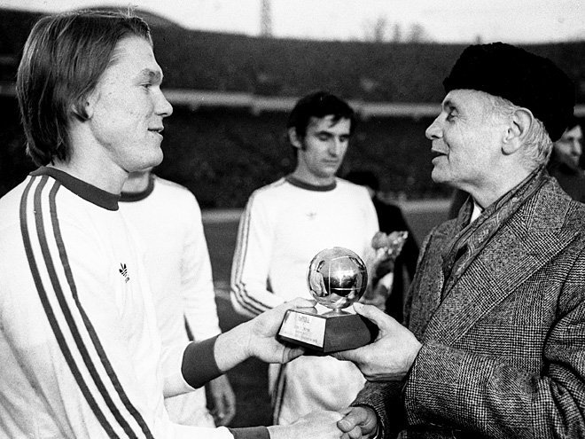
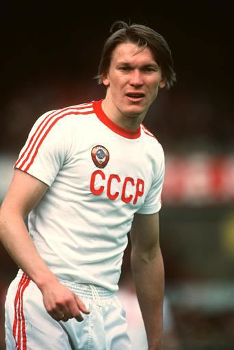

Oleg BLOKHINE - 1975

- Oleg Blokhine succédant à Johan Cruyff au palmarès du Ballon d'Or
Record battu pour le roi de l'année 1975 avec un total de 122 points sur un maximum de 130 !
Nationalité : Soviétique
Né le : 5 novembre 1952, à Kiev (UKR)
Taille : 1,80
Poids : 75 kg
Poste : attaquant
Clubs : Dynamo Kiev (1962-1988), Vorwaerts Steyer (1988-1989) et Aris Limassol (1989-1990)
Palmarès de joueur : Supercoupe d'Europe 1975 ; Coupe des Coupes 1975 et 1986 ; Championnat d'URSS 1974, 1975, 1977, 1980, 1981, 1985 et 1986 ; Coupe d'URSS 1974, 1978, 1982, 1985 et 1987 ; meilleur buteur du Championnat d'URSS 1972 (14 buts), 1973 (18), 1974 (20), 1975 (18) et 1977 (17)
Bilan en équipe nationale : 109 sélections A, 39 buts (1972-1988)
Bilan en phase finale de Coupe du monde : 2 participations, 7 matches, 2 buts (1982-1986)
Palmarès Ballon d'Or : vainqueur en 1962
Carrière d'entraîneur : Olympiakos Le Pirée (1990-janvier 1993), PAOK Salonique (février 1993-mai 1994), Ionikos (décembre 1994-février 1997), AEK Athènes (décembre 1998-1999), Ionikos (mars 2000-janvier 2002) et Ukraine A (depuis septembre 2003)
Palmarès d'entraîneur : Coupe de Grèce 1992
Classement du Ballon d’Or France Football 1975 :

Oleg Blokhine (URSS / Dynamo Kiev),
122 pts.
Franz Beckenbaeur (RFA / Bayern Munich),
42 pts.
Johan Cruyff(Pays-Bas / FC Barcelone),
27 pts.
Retour à l'accueil
 Oleg BLOKHINE - 1975
Oleg BLOKHINE - 1975